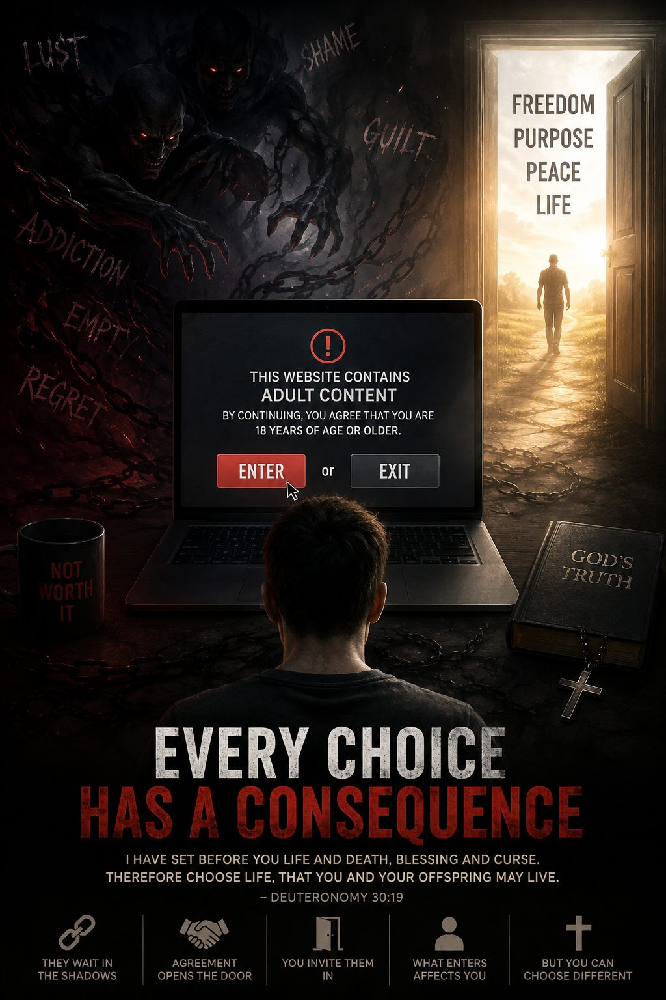

Enter or Exit
Trey Walters · Jul 8, 2026

Just before an adult website loads, you're presented with a simple choice:
Enter or Exit.
Most people see it as nothing more than an age verification screen. But from a Christian perspective, I believe it represents something much deeper.
What if that button is more than a confirmation of your age? What if it's a confirmation of your agreement?
Imagine the scene.
You hover over the Enter button. Hidden in the shadows, unseen by human eyes, darkness waits patiently. Not forcing you. Not dragging you. Simply waiting for permission.
Then... you click Enter.
In that moment, you step into a world designed to capture your mind, shape your desires, and slowly numb your soul. While you believe you're entering a website, spiritually you may also be opening yourself to influences that never had permission before.
Have you ever wondered why you can leave the screen, yet the images remain? Why guilt lingers? Why temptation feels stronger long after you've closed the browser? There are biological reasons, such as the brain's reward system and dopamine, that can reinforce habits. But many Christians also believe there is a spiritual battle taking place beyond what science alone can measure.
The enemy has always worked through agreement.
Throughout Scripture, God gives people the freedom to choose. Love cannot be forced, and neither can rebellion. The kingdom of darkness often operates the same way—it seeks agreement rather than coercion.
Perhaps that's why the choice is so fitting.
Enter or Exit.
One leads toward temporary pleasure with lasting consequences. The other may feel difficult in the moment, but it leads toward freedom.
The next time that screen appears, don't see it as just another button.
See it as a crossroads.
Because sometimes the biggest spiritual battles are won before the page ever loads.